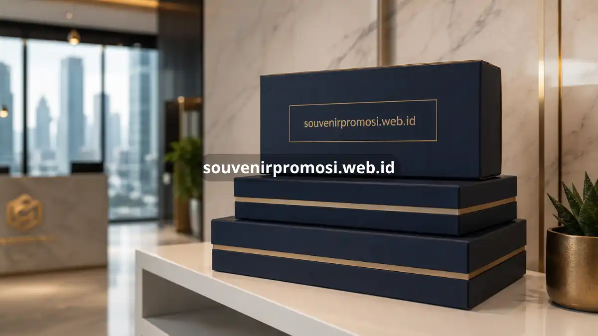

Poin Penting
- Personalisasi logo menjadikan souvenir yang biasa menjadi alat branding yang efektif dan berkelanjutan.
- Konsistensi dalam warna, tipografi, dan desain memperkuat identitas visual perusahaan di hadapan publik.
- Beberapa elemen souvenir dapat dipersonalisasi, mulai dari logo, warna, hingga kemasan tematik.
- Souvenir custom logo cocok digunakan pada berbagai lini merchandise korporat harian.
- SouvenirPromosi menyediakan layanan personalisasi logo presisi untuk kebutuhan branding perusahaan Anda.
Daftar Isi
Souvenir kantor custom logo adalah merchandise korporat yang dipersonalisasi dengan identitas visual perusahaan, seperti logo, warna brand, dan tipografi khas, untuk memperkuat pengenalan merek. Personalisasi ini mengubah barang fungsional sehari-hari menjadi media branding yang terus bekerja setiap kali digunakan oleh penerima. Elemen visual yang konsisten pada souvenir custom logo membantu perusahaan membangun citra profesional yang mudah dikenali di berbagai titik interaksi dengan klien maupun karyawan.
Apa Itu Souvenir Kantor Custom Logo?
Souvenir kantor custom logo adalah produk merchandise yang telah melalui proses personalisasi visual dengan identitas resmi perusahaan, mencakup logo, palet warna brand, hingga elemen desain khas lainnya. Produk ini digunakan sebagai representasi fisik dari identitas perusahaan yang dibagikan kepada klien, mitra, maupun karyawan.
Personalisasi logo pada souvenir kantor umumnya diterapkan melalui teknik seperti emboss pada bahan kulit, laser engraving pada logam dan kayu, sablon digital pada tekstil, atau cetak UV pada permukaan plastik dan kaca. Setiap teknik memiliki karakteristik hasil akhir yang berbeda, sehingga pemilihan metode personalisasi perlu disesuaikan dengan jenis material dan tingkat detail logo yang ingin ditampilkan.
Mengapa Personalisasi Logo Penting bagi Identitas Perusahaan?
Personalisasi logo sangat penting untuk identitas perusahaan karena menciptakan konsistensi visual yang memperkuat pengenalan merek di setiap interaksi dengan audiens.
Merek yang tampil konsisten melalui berbagai media, termasuk merchandise fisik, cenderung lebih mudah diingat dibandingkan merek yang identitas visualnya berubah-ubah. Riset Advertising Specialty Institute (ASI) tahun 2026 menunjukkan bahwa merchandise branded memiliki tingkat brand recall tertinggi di antara seluruh kanal pemasaran, mencapai 85 persen. sebuah indikasi kuat bahwa personalisasi logo pada barang fisik berdampak signifikan terhadap ingatan merek jangka panjang. Konsistensi ini juga membangun kepercayaan, karena audiens cenderung mengasosiasikan tampilan visual yang rapi dan seragam dengan tingkat profesionalisme perusahaan yang tinggi.
Selain aspek pengenalan merek, personalisasi logo pada souvenir kantor turut memperkuat rasa kepemilikan internal di kalangan karyawan. Produk bertema perusahaan yang digunakan sehari-hari dapat menumbuhkan kebanggaan terhadap institusi, sekaligus menjadi sarana komunikasi nilai-nilai perusahaan kepada pihak eksternal secara halus.
Elemen Apa Saja yang Bisa Dipersonalisasi pada Souvenir Kantor?
Elemen yang dapat dipersonalisasi pada souvenir kantor meliputi logo, palet warna brand, tipografi, pesan khusus, dan desain kemasan sesuai tema acara.

Logo tetap menjadi elemen personalisasi utama karena berfungsi sebagai identitas paling mudah dikenali. Palet warna brand turut disesuaikan agar produk selaras dengan brand guideline resmi perusahaan, sehingga kesan visual yang tercipta tetap konsisten dengan materi komunikasi lain seperti website atau kop surat. Tipografi khas perusahaan, jika digunakan pada elemen teks seperti nama produk atau slogan, turut memperkuat karakter visual merek.
Pesan khusus, seperti kutipan inspiratif atau ucapan terima kasih personal, dapat ditambahkan pada kemasan atau produk untuk memperdalam kesan emosional penerima. Desain kemasan tematik yang disesuaikan dengan momen acara, seperti peluncuran produk atau perayaan akhir tahun, melengkapi keseluruhan pengalaman unboxing yang berkesan.
Bagaimana Cara Memastikan Hasil Personalisasi Logo Tetap Presisi?
Cara memastikan hasil personalisasi logo tetap presisi adalah dengan menyiapkan file desain berkualitas tinggi, menentukan metode cetak yang sesuai material, dan melakukan pengecekan sampel sebelum produksi massal.
File logo dalam format vektor beresolusi tinggi sangat disarankan agar detail garis dan warna tetap tajam pada berbagai ukuran produk. Pemilihan metode personalisasi juga perlu disesuaikan dengan karakteristik material, karena teknik emboss pada kulit akan menghasilkan tampilan berbeda dibandingkan laser engraving pada logam atau sablon pada tekstil.
Melakukan pengecekan sampel produk sebelum memasuki tahap produksi massal membantu memastikan warna, ukuran, dan penempatan logo sudah sesuai standar brand guideline sebelum dikirimkan ke penerima akhir.
Bagaimana Souvenir Custom Logo Mendukung Konsistensi Branding di Berbagai Lini Merchandise?
Souvenir custom logo mendukung konsistensi branding dengan menghadirkan identitas visual yang sama pada berbagai lini merchandise, mulai dari perlengkapan kerja harian hingga hadiah untuk acara khusus.
Ketika logo, warna, dan gaya desain diterapkan secara seragam pada berbagai kategori produk, mulai dari alat tulis, aksesori teknologi, hingga tekstil seperti tas atau pakaian, audiens akan lebih mudah mengasosiasikan setiap produk tersebut dengan satu identitas merek yang sama. Konsistensi lintas lini produk ini memperkuat kesan profesional dan terorganisir, sekaligus menghindari kebingungan visual yang dapat terjadi apabila setiap batch souvenir menggunakan pendekatan desain yang berbeda-beda.
Penerapan panduan desain yang terperinci, mencakup ketentuan ukuran minimum logo dan kombinasi warna yang diperbolehkan, membantu menjamin bahwa setiap produk logo kustom yang dibuat pada waktu yang berbeda tetap harmonis dengan identitas visual perusahaan secara keseluruhan.
Souvenir kantor custom logo adalah investasi branding yang bekerja secara berkelanjutan setiap kali produk digunakan oleh penerimanya. Konsistensi visual pada logo, warna, dan kemasan bukan sekadar estetika, melainkan strategi memperkuat pengenalan merek yang berdampak nyata terhadap ingatan audiens. SouvenirPromosi siap membantu perusahaan Anda mewujudkan souvenir kantor custom logo dengan hasil personalisasi presisi dan material berkualitas premium. Konsultasikan kebutuhan desain custom logo perusahaan Anda bersama tim SouvenirPromosi hari ini.